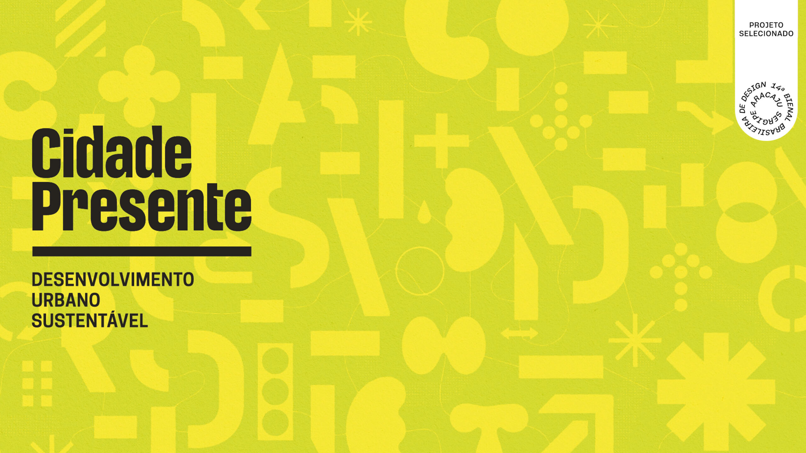
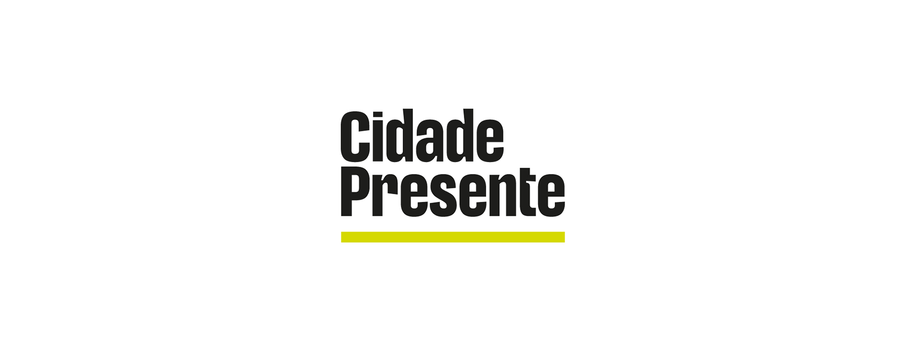
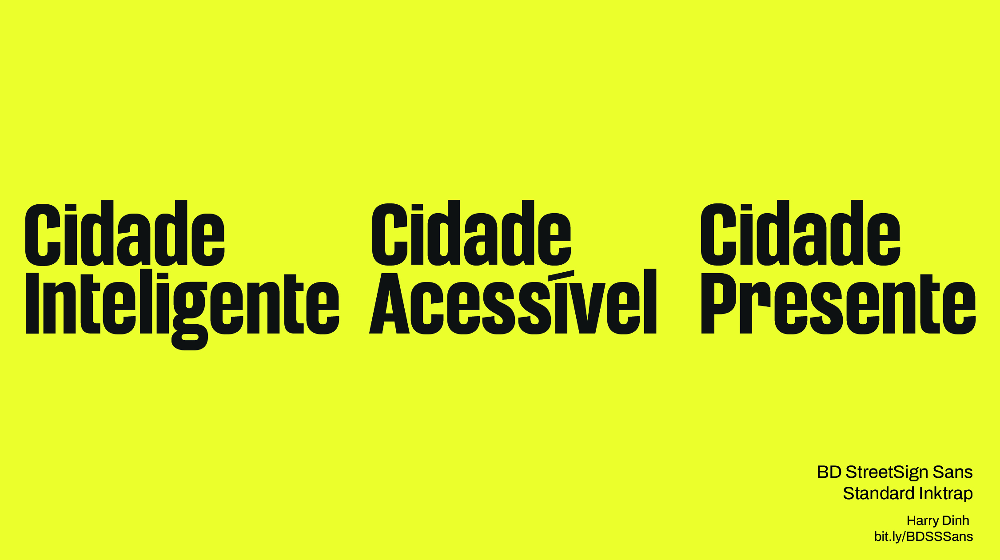
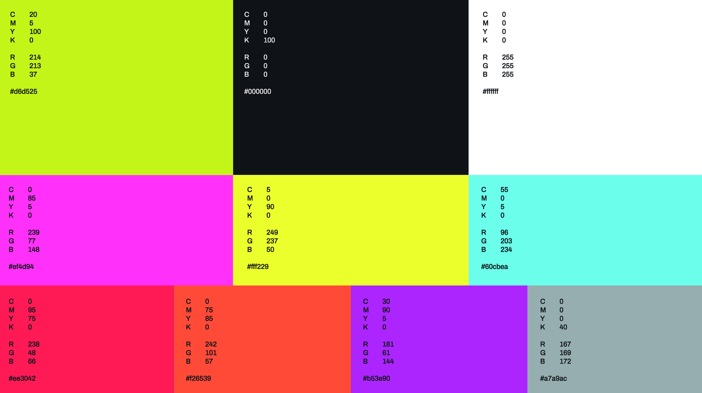
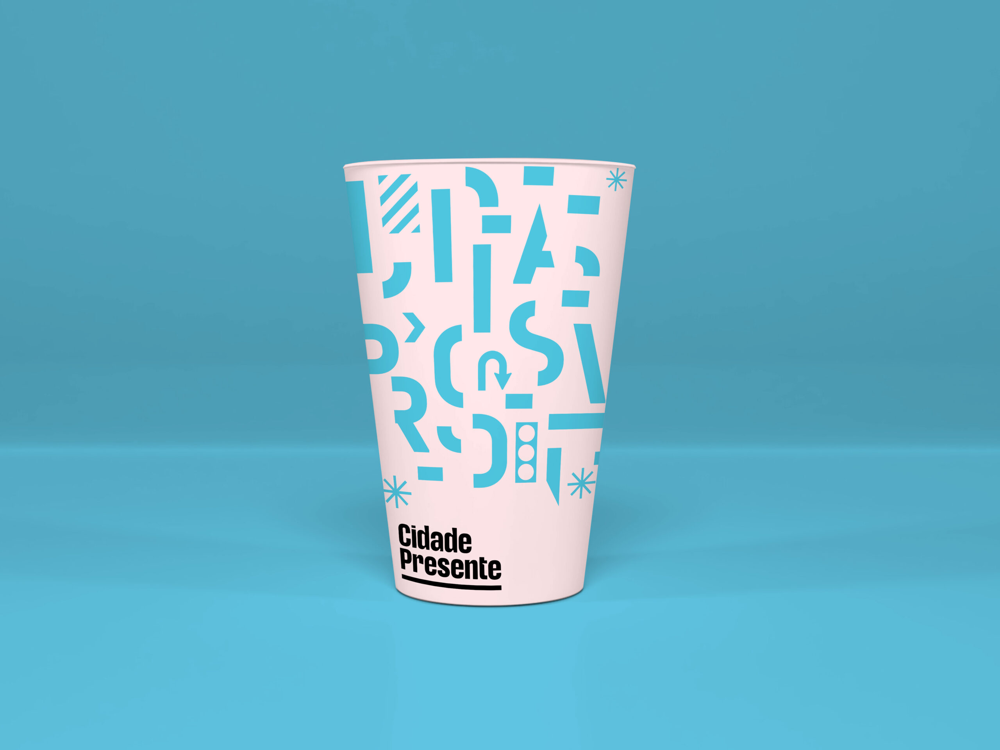
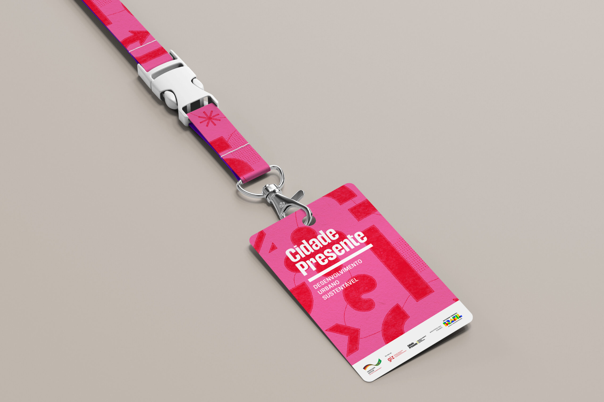
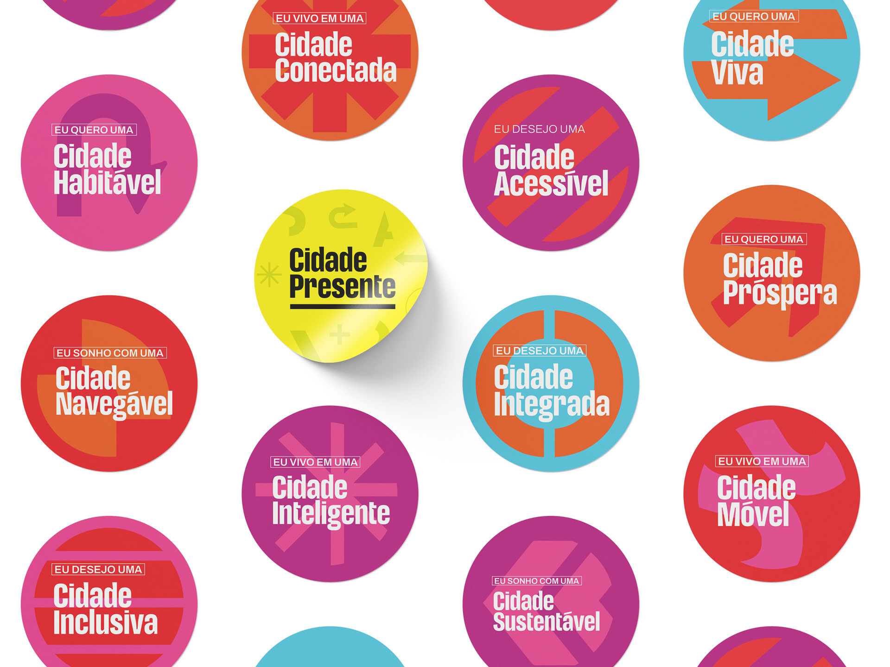
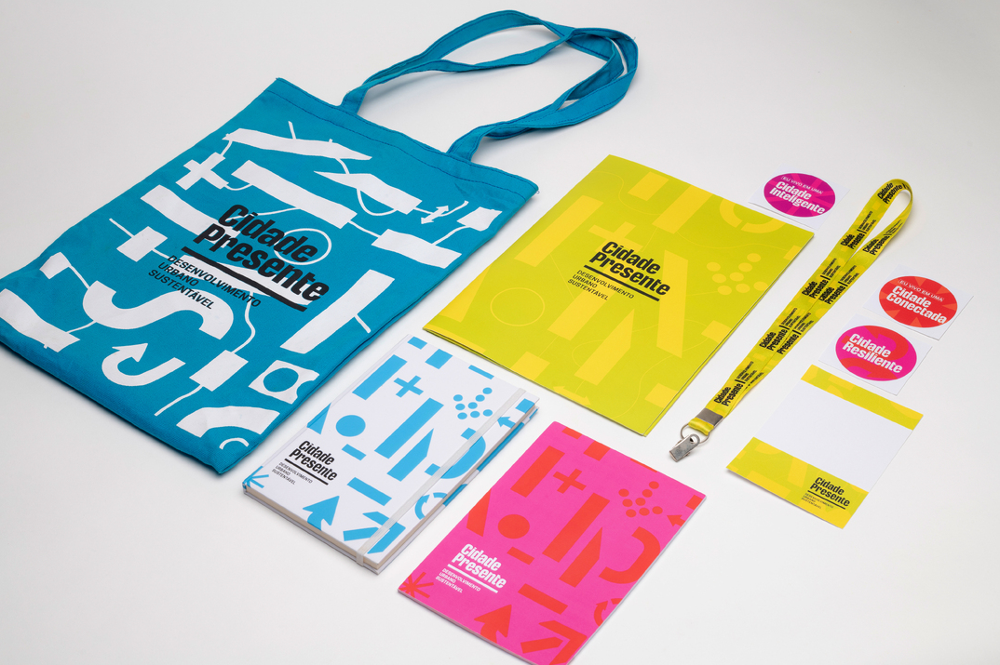
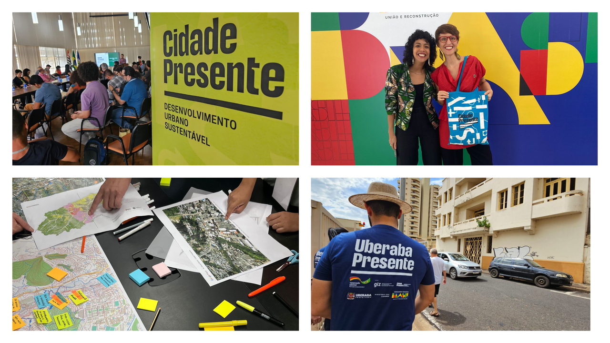
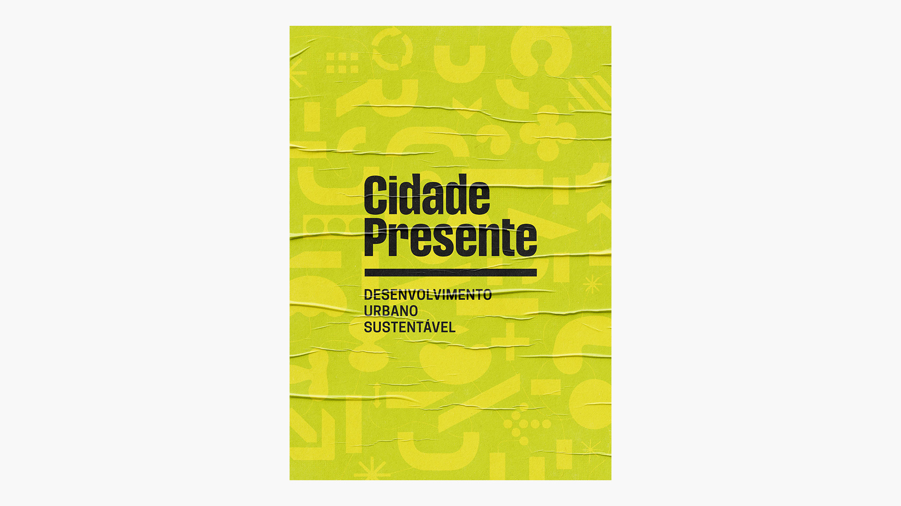

Art direction by Gabriel Menezes and Felipe Cavalcante
Design assistant Cecília Cartaxo
2023
About
Visual identity for the Cidade Presente project, focused on Sustainable Urban Development in Brazilian cities. The project aims to support and promote integrated urban development with a citizen-centered approach through technical cooperation. This involves integrating key sectors of the city and engaging stakeholders at national, state, municipal, and territorial levels, with the goal of enabling inclusive, resilient, prosperous, and sustainable urbanization.
What I did
assistance in visual identity development, design and delivery of the Brand Guidelines (MIV) and its assets (physical and digital)
Project selected for the 14th Brazilian Graphic Design Biennial








